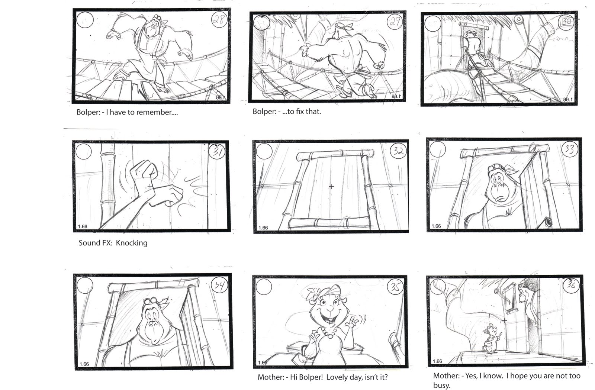
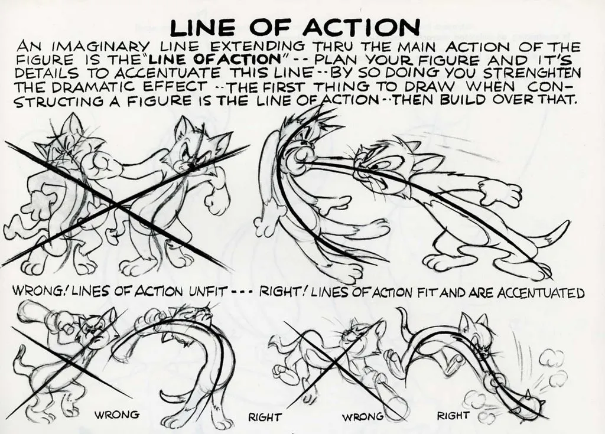

[0]: INTRODUCTION
For a long time, I wanted to create my own 3D animations you would see in movie theatres or youtube. However when I tried to get into 3D animation, I was struck with hard reality that creating animation is not simple as it seems on the surface. There are so many things that go into creating a 3D animation, such as:
- Generating idea
- Gathering references
- Creating concept art
- Writing script
- Storyboarding
- Creating / getting models and assets
- setting up the scene
- Adding lightings (very important)
- Animating
- Compositing
- Voice acting
- Adding sound effects and music
- Editing
These are just handful of process that goes into creating a 3D animation films, and it could get much more complicated when it also includes elements such as 2D animations and motion graphics. Creating an animation by individually would be a very difficult task, having to handle majority of these elements.
However, I have past prior experiences of creating short 3D animations typically lasting no longer than 30 seconds. Through making and publishing these animations on Youtube, I have learned a lot of important skills each time, even if the project gets scrapped. I am determined and confident that with preparations and organized plans, I will be able to create a proper animation video.
Goals
- Create a 3D animation films through similar processes that an actual animation companies or studios go through
- Minimum length of 60 seconds
- Learn new processes
- Writing script
- Storyboarding
- Concept creation
- Inclusion of voice acting even if minimal
- Keeping the 3D animation film within the scope of myself
Scope
This is a somewhat difficult topic, which would require some research in order to find out. I believe this might be the most important part of this project, as over scoping it can lead to undesired result at the end. I would not only like to research about what I can achieve myself in the time scope, but also tools that could help me overcome the scope challenges, since with right tools, the project's process can become faster or much more efficient. With this project, I am hoping to further develope my management skills by planning out what I would need to do for this project, and to then transfer this skill to more ambitious or important projects.
My Capabilities
What I am currently trying to create would have been practically impossible if I went in with zero knowledge. With short creations I created over youtube (and scrapped projects) have been able to learn many important things to create a 3D animation.
Tools I primarily use for 3D animation
- 3D software Blender
- Adobe Premier Pro
- Adobe After Effects
- Adobe Photoshop

Click to watch
With every video, I try to learn something new, for example this video, I learned how to apply cartoon-style cell shading on to models, animating on twos (moving only every two frames), and fight animations.
What I need to learn/research
Even with experiences with making small 3D animations, I still lack skills and knowledge to create proper 3D animation short film. I have never written a proper script, nor created a storyboard to create a solid foundation for my animations. While I have created animations before, they have all lacked the fundamentals of 12 principles of animation, and dynamic posing. While many of these elements might be from 2D animations, they still apply heavily to 3D, being crucial even to the small details, which could further immerse the audiences. There are more processes that I have never done, and learning them can be a really important experience. One experience I am looking forward towards is voice acting, as I have never done a proper one before. This could also improve my collaboration skills.
An example of a storyboard

An example one of the elements in dynamic posing
I also not only have to learn new things, but research them. I have to research tools for the processes I have to learn, such as screenwriting softwares. Researching skill will have to come often especially in the early process, in order to find out the scope of the project, to make sure I can complete the film in time with the quality that it deserves. I would also like to research further on 3D animations for better lighting and animation movement, since I have only scratched the surface of the 3D animation industry.